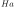
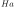
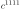
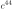
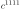
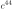
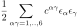
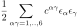
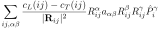
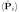

Next: Using Single Ion Module Up: USERS MANUAL Workshops available Previous: Running McPhase and McDisp Contents Index
EWALD: I think you are now ready for the really interesting subjects - I mean phonons and their interactions.
SIMPLICIUS: Ewald , you know, in the past 40 years there always was money for electronic studies and practically no money for phonons and lattice dynamics. So why should we suddenly go back and study phonons. You can predict phonon dynamics with DFT methods nowadays - even in exotic matter. Are you serious about studying phonons ?
EWALD: I know, the mainstream of solid state research is based on the Born-Oppenheimer adiabatic approximation and thus phonons are considered of minor importance. However, BCS theory on superconductivity is a good example on how phonon may enter suddenly into the theory with unexpected effects. Similar, in magnetism we usually neglect phonons. However, there are some examples which demonstrate, that for example for the interpretation of crystal field spectra it may be necessary to take into account compound modes having both phononic and magnetic character and correspondingly can be observed in magnetic and nuclear scattering of neutrons.
ORLANDO: According to my simple view of this subject, aren't we talking about the origin of magnetostriction ?
EWALD: Yes indeed, I did not think this way. You are right, magnetostriction would be zero if there was not some couling between the electronic and lattice degrees of freedom.
SIMPLICIUS: So how can phonons be handled ?
EWALD: Let me first show you, how lattice dynamics may be considered in the framework of the Hamiltonian (253). We will see that this corresponds to a system of coupled Einstein oscillators. One such oscillator can be modelled by setting up a sipf file with the module phonon. Coupling has to be done in mcdisp.j. Rephrasing lattice dynamics in this way allows then to couple phonons to the crystal field.
A three dimensional Einstein oscillator (for atom  ) in a solid can be described by
the following Hamiltonian
) in a solid can be described by
the following Hamiltonian
Here
is the dimensionless displacement vector
(
 ,
with the Bohr radius  Å),
,
with the Bohr radius  Å),  the
mass of the atom ,
the conjugate momentum to
and
the
mass of the atom ,
the conjugate momentum to
and
 the Matrix describing the restoring force.
the Matrix describing the restoring force.
Coupling such oscillators leads to the Hamiltonian
 (87)
(87)
Note that our coupling constants
, where
 are the second-order derivatives of the potential energy
as defined e.g. in [32, page 99].
are the second-order derivatives of the potential energy
as defined e.g. in [32, page 99].
In a mean field type of theory the phonon single ion module has thus to solve the Hamiltonian
Here the force corresponds to the exchange field
 and
to
the general operator
and
to
the general operator
 and
 to
 of equation (253),
respectively. The single ion Hamiltonian (91) can be solved by transforming
it to normal coordinates (main axis of the Einstein oscillator) using the transformation
matrix , which diagonalises
and
 to
 of equation (253),
respectively. The single ion Hamiltonian (91) can be solved by transforming
it to normal coordinates (main axis of the Einstein oscillator) using the transformation
matrix , which diagonalises
 :
:
 (89)
(89)
Due to the action of the force the equilibrium position of the oscillator
is
(it is the task of the function
Icalc to return this equilibrium position), the energies correspond to the three elements
of the diagonal matrix
 , i.e.
,
, i.e.
,
 ,
,
 . In order to run mcdisp we
have to calculate the transition matrix elements:
. In order to run mcdisp we
have to calculate the transition matrix elements:
The single ion susceptibility for such a transition, e.g. - corresponds to
 |
 |
 | (91) | |
|
 | (92) |
Because the different components of  commute and the Hamiltonian (93)
is separable, for the transition only the terms with
commute and the Hamiltonian (93)
is separable, for the transition only the terms with  in the nominator
contribute:
in the nominator
contribute:
 |
|
 | (93) | |
|
(94) |
In order to derive the last result we had to express  in terms of ladder operators
in terms of ladder operators
 and apply
,
and apply
,
 and
and
 ,
. This shows that the single ion susceptibility
of our atom can be written as a sum of three effective transitions (with temperature independent
susceptibility)
,
. This shows that the single ion susceptibility
of our atom can be written as a sum of three effective transitions (with temperature independent
susceptibility)
|
|
 | (95) |
Thus the module phonon has to provide in it's function du1calc these three transitions (=number of transitions).